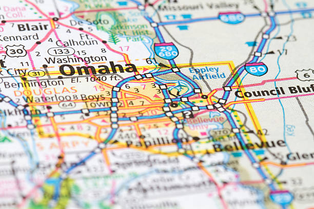

About Me

Hello! My name is Giovaughni Padilla but I go by Gio. While for the most part, I grew up in Coeur d'Alene, ID and Payson, AZ, I now live in Omaha, NE with my wife. I enjoy being hands on with crafts and projects. I own a 3d printer where I enjoy designing things that I can 3d print. I want to be able to further my education in order to gain a new job that I can enjoy and turn into a career.
Omaha, Nebraska
Omaha, Nebraska, is a vibrant city on the Missouri River known for its rich pioneer history, lively arts scene, and famous zoo, the Henry Doorly Zoo and Aquarium. It’s home to a diverse range of neighborhoods, historic sites, and a rapidly growing tech industry, blending Midwestern charm with modern urban amenities.